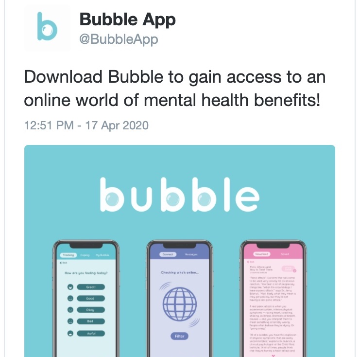
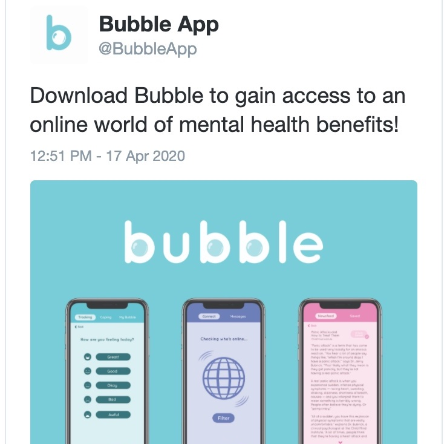

App Campaign Video
Bubble is a social media platform that focuses on one's mental health.
In this app, users are able to connect with other people based on
similar personal struggles and experiences. On top of that, users can
also privately track moods, find coping mechanisms, do guided
meditations, and find helpful articles about mental health topics.
This project was completed for my senior thesis at University of the
Arts which was given the Capstone Citation Award.

Subway Ad

 
